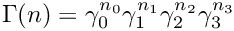
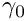
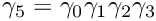
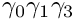
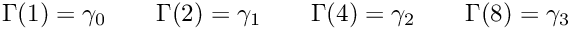

Spin Conventions
Spin Conventions
The following set of 
![\[\begin{array}{lccc}
\gamma_0\quad\quad&
\left(\begin{array}{rrrr}
0&0&0&i\\
0&0&i&0\\
0&-i&0&0\\
-i&0&0&0\\
\end{array}\right)\quad &
\left(\begin{array}{rr}
0&i\sigma^1\\
-i\sigma^1&0
\end{array}\right)\quad\quad &
-\sigma^2\!\otimes\!\sigma^1\\
\gamma_1\quad\quad&
\left(\begin{array}{rrrr}
0&0&0&-1\\
0&0&1&0\\
0&1&0&0\\
-1&0&0&0\\
\end{array}\right)\quad &
\left(\begin{array}{rr}
0&-i\sigma^2\\
i\sigma^2&0
\end{array}\right)\quad\quad &
\sigma^2\!\otimes\!\sigma^2\\
\gamma_2\quad\quad&
\left(\begin{array}{rrrr}
0&0&i&0\\
0&0&0&-i\\
-i&0&0&0\\
0&i&0&0\\
\end{array}\right)\quad &
\left(\begin{array}{rr}
0&i\sigma^3\\
-i\sigma^3&0
\end{array}\right)\quad\quad &
-\sigma^2\!\otimes\!\sigma^3\\
\gamma_3\quad\quad&
\left(\begin{array}{rrrr}
0&0&1&0\\
0&0&0&1\\
1&0&0&0\\
0&1&0&0\\
\end{array}\right)\quad &
\left(\begin{array}{rr}
0&\mathbf{1}\\
\mathbf{1}&0
\end{array}\right)\quad\quad &
\sigma^1\!\otimes\!1\\
\end{array}
\]](form_23_dark.png)
The basis is chiral. All the possible gamma matrix products are represented via

where ni are single bit fields. Since 
So,  

This enumeration is
Generated by